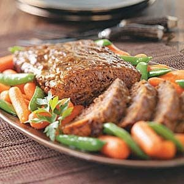

Venison Meatloaf

Decription
My mother, who claims she can detect venison in any recipe, didn't have a clue it was in this tender meat loaf until we told her after dinner. She raved about this flavorful main dish the entire time she was eating it! -Liz Gilchrist, Bolton, Ontario
Ingredients
- 2 eggs
- 1 can (8 ounces) tomato sauce
- 1 medium onion, finely chopped
- 1 cup dry bread crumbs
- 1 1/2 teaspoons salt
- 1/8 teaspoon pepper
- 1 1/2 pounds ground venison
- 2 tablespoons brown sugar
- 2 tablespoons spicy brown mustard
- 2 tablespoons white vinegar
Steps
- In a large bowl, lightly beat eggs; add tomato sauce, onion, crumbs, salt and pepper. Add venison and mix well. Press into an ungreased 9x5-in. loaf pan. Combine brown sugar, mustard and vinegar; pour over meat loaf. Bake, uncovered, at 350° for 70 minutes or until a thermometer reads 160°.
Love this recipe? Try these other favorites below!